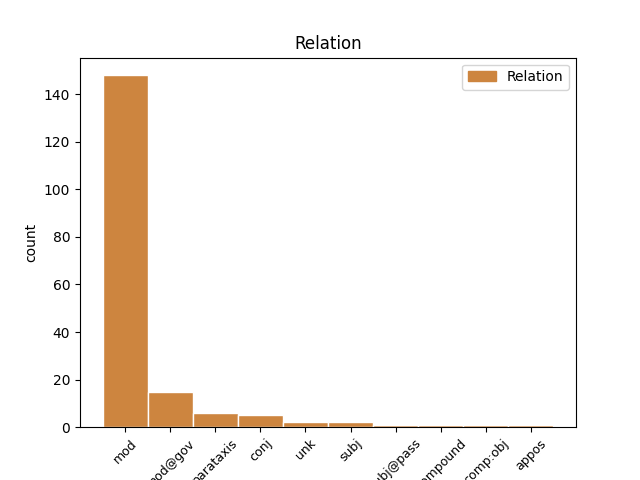
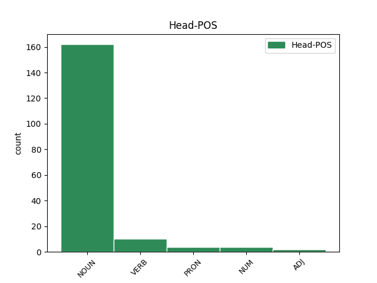
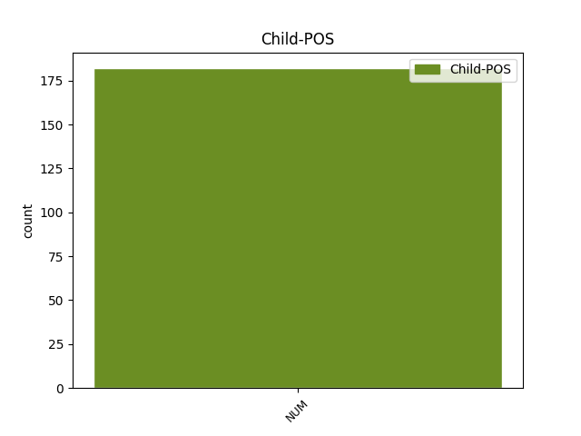

Distribution of features within this leaf



Agreement Rules sorted by frequency.
- When the dependent token is the modifer(mod) of the head token, and the dependent token is NUM.
1 11 _ _ _ _ 0 _ _ _
2 . _ _ _ _ 0 _ _ _
3 Komiteto _ _ _ _ 0 _ _ _
4 pirmininkas _ _ _ _ 0 _ _ _
5 arba _ _ _ _ 0 _ _ _
6 , _ _ _ _ 0 _ _ _
7 jo _ _ _ _ 0 _ _ _
8 pavedimu _ _ _ _ 0 _ _ _
9 , _ _ _ _ 0 _ _ _
10 sekretorius _ _ _ _ 0 _ _ _
11 organizuoja _ _ _ _ 0 _ _ _
12 Komiteto _ _ _ _ 0 _ _ _
13 posėdžius _ _ _ _ 0 _ _ _
14 ir _ _ _ _ 0 _ _ _
15 apie _ _ _ _ 0 _ _ _
16 tai _ _ _ _ 0 _ _ _
17 ne _ _ _ _ 0 _ _ _
18 vėliau _ _ _ _ 0 _ _ _
19 kaip _ _ _ _ 0 _ _ _
20 prieš _ _ _ _ 0 _ _ _
21 tris trys NUM sktv.raid.kiek.mot.G. Case=Acc|Gender=Fem|NumForm=Word|NumType=Card 23 mod _ _
22 darbo _ _ _ _ 0 _ _ _
23 dienas diena NOUN dkt.mot.dgs.G. Case=Acc|Gender=Fem|Number=Plur 0 _ _ _
24 praneša _ _ _ _ 0 _ _ _
25 visiems _ _ _ _ 0 _ _ _
26 Komiteto _ _ _ _ 0 _ _ _
27 nariams _ _ _ _ 0 _ _ _
28 ir _ _ _ _ 0 _ _ _
29 kitiems _ _ _ _ 0 _ _ _
30 posėdžių _ _ _ _ 0 _ _ _
31 dalyviams _ _ _ _ 0 _ _ _
32 , _ _ _ _ 0 _ _ _
33 paskelbdamas _ _ _ _ 0 _ _ _
34 darbotvarkes _ _ _ _ 0 _ _ _
35 ir _ _ _ _ 0 _ _ _
36 pateikdamas _ _ _ _ 0 _ _ _
37 numatomus _ _ _ _ 0 _ _ _
38 nagrinėti _ _ _ _ 0 _ _ _
39 dokumentus _ _ _ _ 0 _ _ _
40 . _ _ _ _ 0 _ _ _
1 16 _ _ _ _ 0 _ _ _
2 . _ _ _ _ 0 _ _ _
3 Šio _ _ _ _ 0 _ _ _
4 straipsnio _ _ _ _ 0 _ _ _
5 13 _ _ _ _ 0 _ _ _
6 dalyje _ _ _ _ 0 _ _ _
7 nurodytas _ _ _ _ 0 _ _ _
8 koeficientas _ _ _ _ 0 _ _ _
9 kn _ _ _ _ 0 _ _ _
10 laikomas _ _ _ _ 0 _ _ _
11 lygiu _ _ _ _ 0 _ _ _
12 nuliui _ _ _ _ 0 _ _ _
13 , _ _ _ _ 0 _ _ _
14 jei _ _ _ _ 0 _ _ _
15 nuo _ _ _ _ 0 _ _ _
16 25 _ _ _ _ 0 _ _ _
17 iki _ _ _ _ 0 _ _ _
18 50 _ _ _ _ 0 _ _ _
19 procentų _ _ _ _ 0 _ _ _
20 įmonės _ _ _ _ 0 _ _ _
21 akcijų _ _ _ _ 0 _ _ _
22 , _ _ _ _ 0 _ _ _
23 pajų _ _ _ _ 0 _ _ _
24 ar _ _ _ _ 0 _ _ _
25 kitokių _ _ _ _ 0 _ _ _
26 dalyvavimą _ _ _ _ 0 _ _ _
27 įmonės _ _ _ _ 0 _ _ _
28 kapitale _ _ _ _ 0 _ _ _
29 žyminčių _ _ _ _ 0 _ _ _
30 kapitalo _ _ _ _ 0 _ _ _
31 dalių _ _ _ _ 0 _ _ _
32 arba _ _ _ _ 0 _ _ _
33 nuo _ _ _ _ 0 _ _ _
34 25 _ _ _ _ 0 _ _ _
35 iki _ _ _ _ 0 _ _ _
36 50 _ _ _ _ 0 _ _ _
37 procentų _ _ _ _ 0 _ _ _
38 visų _ _ _ _ 0 _ _ _
39 įmonės _ _ _ _ 0 _ _ _
40 dalyvių _ _ _ _ 0 _ _ _
41 balsų _ _ _ _ 0 _ _ _
42 tiesiogiai _ _ _ _ 0 _ _ _
43 ar _ _ _ _ 0 _ _ _
44 netiesiogiai _ _ _ _ 0 _ _ _
45 ( _ _ _ _ 0 _ _ _
46 pagal _ _ _ _ 0 _ _ _
47 balsavimo _ _ _ _ 0 _ _ _
48 sutartį _ _ _ _ 0 _ _ _
49 , _ _ _ _ 0 _ _ _
50 balsavimo _ _ _ _ 0 _ _ _
51 teisės _ _ _ _ 0 _ _ _
52 perleidimo _ _ _ _ 0 _ _ _
53 sutartį _ _ _ _ 0 _ _ _
54 , _ _ _ _ 0 _ _ _
55 įgaliojimą _ _ _ _ 0 _ _ _
56 ir _ _ _ _ 0 _ _ _
57 pan _ _ _ _ 0 _ _ _
58 . _ _ _ _ 0 _ _ _
59 ) _ _ _ _ 0 _ _ _
60 turi _ _ _ _ 0 _ _ _
61 šie _ _ _ _ 0 _ _ _
62 investuotojai _ _ _ _ 0 _ _ _
63 : _ _ _ _ 0 _ _ _
64 1 _ _ _ _ 0 _ _ _
65 ) _ _ _ _ 0 _ _ _
66 valdymo _ _ _ _ 0 _ _ _
67 įmonės _ _ _ _ 0 _ _ _
68 ar _ _ _ _ 0 _ _ _
69 investicinės _ _ _ _ 0 _ _ _
70 bendrovės _ _ _ _ 0 _ _ _
71 , _ _ _ _ 0 _ _ _
72 investuojančios _ _ _ _ 0 _ _ _
73 į _ _ _ _ 0 _ _ _
74 įmones _ _ _ _ 0 _ _ _
75 rizikos _ _ _ _ 0 _ _ _
76 kapitalo _ _ _ _ 0 _ _ _
77 kolektyvinio _ _ _ _ 0 _ _ _
78 investavimo _ _ _ _ 0 _ _ _
79 subjektų _ _ _ _ 0 _ _ _
80 lėšas _ _ _ _ 0 _ _ _
81 , _ _ _ _ 0 _ _ _
82 ir _ _ _ _ 0 _ _ _
83 neformalieji _ _ _ _ 0 _ _ _
84 investuotojai _ _ _ _ 0 _ _ _
85 , _ _ _ _ 0 _ _ _
86 jei _ _ _ _ 0 _ _ _
87 šių _ _ _ _ 0 _ _ _
88 investuotojų _ _ _ _ 0 _ _ _
89 bendra _ _ _ _ 0 _ _ _
90 investicijų _ _ _ _ 0 _ _ _
91 į _ _ _ _ 0 _ _ _
92 tą _ _ _ _ 0 _ _ _
93 pačią _ _ _ _ 0 _ _ _
94 įmonę _ _ _ _ 0 _ _ _
95 suma _ _ _ _ 0 _ _ _
96 ne _ _ _ _ 0 _ _ _
97 didesnė _ _ _ _ 0 _ _ _
98 kaip _ _ _ _ 0 _ _ _
99 4,3 _ _ _ _ 0 _ _ _
100 mln _ _ _ _ 0 _ _ _
101 . _ _ _ _ 0 _ _ _
102 litų _ _ _ _ 0 _ _ _
103 ; _ _ _ _ 0 _ _ _
104 2 _ _ _ _ 0 _ _ _
105 ) _ _ _ _ 0 _ _ _
106 mokslo _ _ _ _ 0 _ _ _
107 ir _ _ _ _ 0 _ _ _
108 studijų _ _ _ _ 0 _ _ _
109 institucijos _ _ _ _ 0 _ _ _
110 , _ _ _ _ 0 _ _ _
111 kurios _ _ _ _ 0 _ _ _
112 Lietuvos _ _ _ _ 0 _ _ _
113 Respublikos _ _ _ _ 0 _ _ _
114 įstatymų _ _ _ _ 0 _ _ _
115 nustatyta _ _ _ _ 0 _ _ _
116 tvarka _ _ _ _ 0 _ _ _
117 gali _ _ _ _ 0 _ _ _
118 investuoti _ _ _ _ 0 _ _ _
119 turtą _ _ _ _ 0 _ _ _
120 ; _ _ _ _ 0 _ _ _
121 3 _ _ _ _ 0 _ _ _
122 ) _ _ _ _ 0 _ _ _
123 profesionalieji _ _ _ _ 0 _ _ _
124 investuotojai _ _ _ _ 0 _ _ _
125 , _ _ _ _ 0 _ _ _
126 išskyrus _ _ _ _ 0 _ _ _
127 valstybių _ _ _ _ 0 _ _ _
128 centrines _ _ _ _ 0 _ _ _
129 ir _ _ _ _ 0 _ _ _
130 regionines _ _ _ _ 0 _ _ _
131 valdžios _ _ _ _ 0 _ _ _
132 institucijas _ _ _ _ 0 _ _ _
133 ; _ _ _ _ 0 _ _ _
134 4 _ _ _ _ 0 _ _ _
135 ) _ _ _ _ 0 _ _ _
136 savivaldybės _ _ _ _ 0 _ _ _
137 , _ _ _ _ 0 _ _ _
138 kurių _ _ _ _ 0 _ _ _
139 metinis _ _ _ _ 0 _ _ _
140 biudžetas _ _ _ _ 0 _ _ _
141 mažesnis _ _ _ _ 0 _ _ _
142 kaip _ _ _ _ 0 _ _ _
143 34,5 _ _ _ _ 0 _ _ _
144 mln _ _ _ _ 0 _ _ _
145 . _ _ _ _ 0 _ _ _
146 litų _ _ _ _ 0 _ _ _
147 ir _ _ _ _ 0 _ _ _
148 kurių _ _ _ _ 0 _ _ _
149 teritorijoje _ _ _ _ 0 _ _ _
150 gyvena _ _ _ _ 0 _ _ _
151 mažiau _ _ _ _ 0 _ _ _
152 kaip _ _ _ _ 0 _ _ _
153 5 _ _ _ _ 0 _ _ _
154 tūkstančiai tūkstantis NUM sktv.raid.kiek.vyr.dgs.V. Case=Nom|Gender=Masc|Number=Plur|NumForm=Word|NumType=Card 155 mod@gov _ _
155 gyventojų gyventojas NOUN dkt.vyr.dgs.K. Case=Gen|Gender=Masc|Number=Plur 0 _ _ _
156 . _ _ _ _ 0 _ _ _
1 3 _ _ _ _ 0 _ _ _
2 . _ _ _ _ 0 _ _ _
3 Viešąsias _ _ _ _ 0 _ _ _
4 paslaugas _ _ _ _ 0 _ _ _
5 verslui _ _ _ _ 0 _ _ _
6 teikiančiai _ _ _ _ 0 _ _ _
7 viešajai _ _ _ _ 0 _ _ _
8 įstaigai _ _ _ _ 0 _ _ _
9 , _ _ _ _ 0 _ _ _
10 kurios _ _ _ _ 0 _ _ _
11 savininkė savininkė NOUN dkt.mot.vns.V. Case=Nom|Gender=Fem|Number=Sing 0 _ _ _
12 arba _ _ _ _ 0 _ _ _
13 viena vienas NUM sktv.raid.kiekin.mot.vns.V. Case=Nom|Definite=Ind|Gender=Fem|Number=Sing|NumForm=Word 11 conj _ _
14 iš _ _ _ _ 0 _ _ _
15 dalininkų _ _ _ _ 0 _ _ _
16 yra _ _ _ _ 0 _ _ _
17 valstybė _ _ _ _ 0 _ _ _
18 ir _ _ _ _ 0 _ _ _
19 ( _ _ _ _ 0 _ _ _
20 arba _ _ _ _ 0 _ _ _
21 ) _ _ _ _ 0 _ _ _
22 savivaldybė _ _ _ _ 0 _ _ _
23 , _ _ _ _ 0 _ _ _
24 panaudos _ _ _ _ 0 _ _ _
25 pagrindais _ _ _ _ 0 _ _ _
26 perduotą _ _ _ _ 0 _ _ _
27 valstybės _ _ _ _ 0 _ _ _
28 ar _ _ _ _ 0 _ _ _
29 savivaldybės _ _ _ _ 0 _ _ _
30 turtą _ _ _ _ 0 _ _ _
31 arba _ _ _ _ 0 _ _ _
32 jo _ _ _ _ 0 _ _ _
33 dalį _ _ _ _ 0 _ _ _
34 šio _ _ _ _ 0 _ _ _
35 turto _ _ _ _ 0 _ _ _
36 valdytojas _ _ _ _ 0 _ _ _
37 , _ _ _ _ 0 _ _ _
38 vadovaudamasis _ _ _ _ 0 _ _ _
39 Valstybės _ _ _ _ 0 _ _ _
40 ir _ _ _ _ 0 _ _ _
41 savivaldybių _ _ _ _ 0 _ _ _
42 turto _ _ _ _ 0 _ _ _
43 valdymo _ _ _ _ 0 _ _ _
44 , _ _ _ _ 0 _ _ _
45 naudojimo _ _ _ _ 0 _ _ _
46 ir _ _ _ _ 0 _ _ _
47 disponavimo _ _ _ _ 0 _ _ _
48 juo _ _ _ _ 0 _ _ _
49 įstatymu _ _ _ _ 0 _ _ _
50 , _ _ _ _ 0 _ _ _
51 viešosios _ _ _ _ 0 _ _ _
52 įstaigos _ _ _ _ 0 _ _ _
53 siūlymu _ _ _ _ 0 _ _ _
54 gali _ _ _ _ 0 _ _ _
55 išnuomoti _ _ _ _ 0 _ _ _
56 tretiesiems _ _ _ _ 0 _ _ _
57 asmenims _ _ _ _ 0 _ _ _
58 – _ _ _ _ 0 _ _ _
59 smulkiojo _ _ _ _ 0 _ _ _
60 ir _ _ _ _ 0 _ _ _
61 vidutinio _ _ _ _ 0 _ _ _
62 verslo _ _ _ _ 0 _ _ _
63 subjektams _ _ _ _ 0 _ _ _
64 tais _ _ _ _ 0 _ _ _
65 atvejais _ _ _ _ 0 _ _ _
66 , _ _ _ _ 0 _ _ _
67 kai _ _ _ _ 0 _ _ _
68 turto _ _ _ _ 0 _ _ _
69 nuoma _ _ _ _ 0 _ _ _
70 yra _ _ _ _ 0 _ _ _
71 neatskiriama _ _ _ _ 0 _ _ _
72 viešųjų _ _ _ _ 0 _ _ _
73 paslaugų _ _ _ _ 0 _ _ _
74 verslui _ _ _ _ 0 _ _ _
75 dalis _ _ _ _ 0 _ _ _
76 ir _ _ _ _ 0 _ _ _
77 yra _ _ _ _ 0 _ _ _
78 būtina _ _ _ _ 0 _ _ _
79 tinkamai _ _ _ _ 0 _ _ _
80 viešųjų _ _ _ _ 0 _ _ _
81 paslaugų _ _ _ _ 0 _ _ _
82 verslui _ _ _ _ 0 _ _ _
83 kokybei _ _ _ _ 0 _ _ _
84 užtikrinti _ _ _ _ 0 _ _ _
85 . _ _ _ _ 0 _ _ _
1 Pirma pirmas NUM sktv.raid.kelint.bev. Definite=Ind|Gender=Neut|NumForm=Word|NumType=Ord 31 parataxis _ SpaceAfter=No
2 , _ _ _ _ 0 _ _ _
3 remiantis _ _ _ _ 0 _ _ _
4 ES _ _ _ _ 0 _ _ _
5 sutarčių _ _ _ _ 0 _ _ _
6 ( _ _ _ _ 0 _ _ _
7 darant _ _ _ _ 0 _ _ _
8 prielaidą _ _ _ _ 0 _ _ _
9 , _ _ _ _ 0 _ _ _
10 kad _ _ _ _ 0 _ _ _
11 Lisabonos _ _ _ _ 0 _ _ _
12 sutartis _ _ _ _ 0 _ _ _
13 bus _ _ _ _ 0 _ _ _
14 sėkmingai _ _ _ _ 0 _ _ _
15 ratifikuota _ _ _ _ 0 _ _ _
16 ) _ _ _ _ 0 _ _ _
17 nuostatomis _ _ _ _ 0 _ _ _
18 , _ _ _ _ 0 _ _ _
19 ES _ _ _ _ 0 _ _ _
20 piliečių _ _ _ _ 0 _ _ _
21 nuomone _ _ _ _ 0 _ _ _
22 , _ _ _ _ 0 _ _ _
23 fiskalinio _ _ _ _ 0 _ _ _
24 federalizmo _ _ _ _ 0 _ _ _
25 principais _ _ _ _ 0 _ _ _
26 ir _ _ _ _ 0 _ _ _
27 ES _ _ _ _ 0 _ _ _
28 politikų _ _ _ _ 0 _ _ _
29 vertinimais _ _ _ _ 0 _ _ _
30 , _ _ _ _ 0 _ _ _
31 prognozuojama prognozuoti VERB vksm.dlv.neveik.es.bev. Definite=Ind|Gender=Neut|Polarity=Pos|Tense=Pres|VerbForm=Part|Voice=Pass 0 _ _ _
32 , _ _ _ _ 0 _ _ _
33 kokie _ _ _ _ 0 _ _ _
34 turėtų _ _ _ _ 0 _ _ _
35 būti _ _ _ _ 0 _ _ _
36 ES _ _ _ _ 0 _ _ _
37 biudžeto _ _ _ _ 0 _ _ _
38 tikslai _ _ _ _ 0 _ _ _
39 ir _ _ _ _ 0 _ _ _
40 pagrindiniai _ _ _ _ 0 _ _ _
41 instrumentai _ _ _ _ 0 _ _ _
42 . _ _ _ _ 0 _ _ _
1 Stovime _ _ _ _ 0 _ _ _
2 su _ _ _ _ 0 _ _ _
3 sūnumi _ _ _ _ 0 _ _ _
4 kino _ _ _ _ 0 _ _ _
5 teatro _ _ _ _ 0 _ _ _
6 tualete _ _ _ _ 0 _ _ _
7 , _ _ _ _ 0 _ _ _
8 abu abu NUM sktv.raid.kiek.vyr.V. Case=Nom|Gender=Masc|NumForm=Word|NumType=Card 9 subj _ _
9 išsitraukę išsitraukti VERB vksm.dlv.sngr.veik.būt-k.vyr.dgs.V. Aspect=Perf|Case=Nom|Definite=Ind|Gender=Masc|Number=Plur|Polarity=Pos|Reflex=Yes|Tense=Past|VerbForm=Part|Voice=Act 0 _ _ _
10 savo _ _ _ _ 0 _ _ _
11 virkšteles _ _ _ _ 0 _ _ _
12 , _ _ _ _ 0 _ _ _
13 tuštiname _ _ _ _ 0 _ _ _
14 šlapimo _ _ _ _ 0 _ _ _
15 pūsles _ _ _ _ 0 _ _ _
16 , _ _ _ _ 0 _ _ _
17 spoksodami _ _ _ _ 0 _ _ _
18 priešais _ _ _ _ 0 _ _ _
19 save _ _ _ _ 0 _ _ _
20 į _ _ _ _ 0 _ _ _
21 sieną _ _ _ _ 0 _ _ _
22 , _ _ _ _ 0 _ _ _
23 mudu _ _ _ _ 0 _ _ _
24 skiria _ _ _ _ 0 _ _ _
25 simbolinė _ _ _ _ 0 _ _ _
26 plastmasinė _ _ _ _ 0 _ _ _
27 pertvara _ _ _ _ 0 _ _ _
28 , _ _ _ _ 0 _ _ _
29 bet _ _ _ _ 0 _ _ _
30 tai _ _ _ _ 0 _ _ _
31 , _ _ _ _ 0 _ _ _
32 kas _ _ _ _ 0 _ _ _
33 mus _ _ _ _ 0 _ _ _
34 sieja _ _ _ _ 0 _ _ _
35 , _ _ _ _ 0 _ _ _
36 yra _ _ _ _ 0 _ _ _
37 kur _ _ _ _ 0 _ _ _
38 kas _ _ _ _ 0 _ _ _
39 svarbiau _ _ _ _ 0 _ _ _
40 , _ _ _ _ 0 _ _ _
41 nes _ _ _ _ 0 _ _ _
42 tai _ _ _ _ 0 _ _ _
43 ir _ _ _ _ 0 _ _ _
44 yra _ _ _ _ 0 _ _ _
45 tėvo _ _ _ _ 0 _ _ _
46 ir _ _ _ _ 0 _ _ _
47 sūnaus _ _ _ _ 0 _ _ _
48 santykiai _ _ _ _ 0 _ _ _
49 , _ _ _ _ 0 _ _ _
50 drauge _ _ _ _ 0 _ _ _
51 atliekami _ _ _ _ 0 _ _ _
52 tikri _ _ _ _ 0 _ _ _
53 vyriški _ _ _ _ 0 _ _ _
54 gestai _ _ _ _ 0 _ _ _
55 ir _ _ _ _ 0 _ _ _
56 veiksmai _ _ _ _ 0 _ _ _
57 , _ _ _ _ 0 _ _ _
58 jaučiuosi _ _ _ _ 0 _ _ _
59 absoliutus _ _ _ _ 0 _ _ _
60 tėvas _ _ _ _ 0 _ _ _
61 , _ _ _ _ 0 _ _ _
62 ir _ _ _ _ 0 _ _ _
63 tam _ _ _ _ 0 _ _ _
64 , _ _ _ _ 0 _ _ _
65 kad _ _ _ _ 0 _ _ _
66 šis _ _ _ _ 0 _ _ _
67 jausmas _ _ _ _ 0 _ _ _
68 atsirastų _ _ _ _ 0 _ _ _
69 , _ _ _ _ 0 _ _ _
70 nereikia _ _ _ _ 0 _ _ _
71 nieko _ _ _ _ 0 _ _ _
72 , _ _ _ _ 0 _ _ _
73 tiktai _ _ _ _ 0 _ _ _
74 būti _ _ _ _ 0 _ _ _
75 šalia _ _ _ _ 0 _ _ _
76 savo _ _ _ _ 0 _ _ _
77 vaiko _ _ _ _ 0 _ _ _
78 . _ _ _ _ 0 _ _ _
1 Šiuo _ _ _ _ 0 _ _ _
2 metu _ _ _ _ 0 _ _ _
3 ES _ _ _ _ 0 _ _ _
4 rinkoje _ _ _ _ 0 _ _ _
5 cirkuliuoja _ _ _ _ 0 _ _ _
6 trys trys NUM sktv.raid.kiek.mot.V. Case=Nom|Gender=Fem|NumForm=Word|NumType=Card 7 compound _ _
7 dešimtys dešimt NUM sktv.raid.kiek.mot.dgs.V. Case=Nom|Gender=Fem|Number=Plur|NumForm=Word|NumType=Card 0 _ _ _
8 GMO _ _ _ _ 0 _ _ _
9 produktų _ _ _ _ 0 _ _ _
10 . _ _ _ _ 0 _ _ _
1 Straipsnyje _ _ _ _ 0 _ _ _
2 nagrinėjamas nagrinėti VERB vksm.dlv.neveik.es.vyr.vns.V. Case=Nom|Definite=Ind|Gender=Masc|Number=Sing|Polarity=Pos|Tense=Pres|VerbForm=Part|Voice=Pass 0 _ _ _
3 vienas vienas NUM sktv.raid.kiek.vyr.vns.V. Case=Nom|Gender=Masc|Number=Sing|NumForm=Word|NumType=Card 2 subj@pass _ _
4 iš _ _ _ _ 0 _ _ _
5 ES _ _ _ _ 0 _ _ _
6 2004 _ _ _ _ 0 _ _ _
7 - _ _ _ _ 0 _ _ _
8 2006 _ _ _ _ 0 _ _ _
9 m _ _ _ _ 0 _ _ _
10 . _ _ _ _ 0 _ _ _
11 sanglaudos _ _ _ _ 0 _ _ _
12 politikos _ _ _ _ 0 _ _ _
13 reformos _ _ _ _ 0 _ _ _
14 tikslų _ _ _ _ 0 _ _ _
15 - _ _ _ _ 0 _ _ _
16 pritaikyti _ _ _ _ 0 _ _ _
17 ES _ _ _ _ 0 _ _ _
18 sanglaudos _ _ _ _ 0 _ _ _
19 politiką _ _ _ _ 0 _ _ _
20 prie _ _ _ _ 0 _ _ _
21 dėl _ _ _ _ 0 _ _ _
22 ES _ _ _ _ 0 _ _ _
23 plėtros _ _ _ _ 0 _ _ _
24 pasikeitusios _ _ _ _ 0 _ _ _
25 tikrovės _ _ _ _ 0 _ _ _
26 : _ _ _ _ 0 _ _ _
27 padidėjusių _ _ _ _ 0 _ _ _
28 išsivystymo _ _ _ _ 0 _ _ _
29 skirtumų _ _ _ _ 0 _ _ _
30 ES _ _ _ _ 0 _ _ _
31 viduje _ _ _ _ 0 _ _ _
32 . _ _ _ _ 0 _ _ _
1 Pirmuose _ _ _ _ 0 _ _ _
2 dviejuose du NUM sktv.raid.kiek.vyr.Vt. Case=Loc|Gender=Masc|NumForm=Word|NumType=Card 17 unk _ SpaceAfter=No
3 , _ _ _ _ 0 _ _ _
4 panaudojus _ _ _ _ 0 _ _ _
5 aiškinamosios _ _ _ _ 0 _ _ _
6 faktorinės _ _ _ _ 0 _ _ _
7 analizės _ _ _ _ 0 _ _ _
8 matematinį _ _ _ _ 0 _ _ _
9 modelį _ _ _ _ 0 _ _ _
10 , _ _ _ _ 0 _ _ _
11 pradinis _ _ _ _ 0 _ _ _
12 teiginių _ _ _ _ 0 _ _ _
13 skaičius _ _ _ _ 0 _ _ _
14 - _ _ _ _ 0 _ _ _
15 167 _ _ _ _ 0 _ _ _
16 buvo _ _ _ _ 0 _ _ _
17 sumažintas sumažinti VERB vksm.dlv.neveik.būt.vyr.vns.V. Case=Nom|Definite=Ind|Gender=Masc|Number=Sing|Polarity=Pos|Tense=Past|VerbForm=Part|Voice=Pass 0 _ _ _
18 iki _ _ _ _ 0 _ _ _
19 24 _ _ _ _ 0 _ _ _
20 , _ _ _ _ 0 _ _ _
21 jie _ _ _ _ 0 _ _ _
22 priskirti _ _ _ _ 0 _ _ _
23 keturiems _ _ _ _ 0 _ _ _
24 faktoriams _ _ _ _ 0 _ _ _
25 : _ _ _ _ 0 _ _ _
26 socialinės _ _ _ _ 0 _ _ _
27 paramos _ _ _ _ 0 _ _ _
28 , _ _ _ _ 0 _ _ _
29 problemų _ _ _ _ 0 _ _ _
30 sprendimo _ _ _ _ 0 _ _ _
31 , _ _ _ _ 0 _ _ _
32 emocinės _ _ _ _ 0 _ _ _
33 iškrovos _ _ _ _ 0 _ _ _
34 ir _ _ _ _ 0 _ _ _
35 vengimo _ _ _ _ 0 _ _ _
36 . _ _ _ _ 0 _ _ _
1 Tačiau _ _ _ _ 0 _ _ _
2 tai _ _ _ _ 0 _ _ _
3 irgi _ _ _ _ 0 _ _ _
4 nesvarbu _ _ _ _ 0 _ _ _
5 , _ _ _ _ 0 _ _ _
6 kartais _ _ _ _ 0 _ _ _
7 tarp _ _ _ _ 0 _ _ _
8 mūsų _ _ _ _ 0 _ _ _
9 nėra _ _ _ _ 0 _ _ _
10 jokio _ _ _ _ 0 _ _ _
11 objekto _ _ _ _ 0 _ _ _
12 , _ _ _ _ 0 _ _ _
13 matomo matyti VERB vksm.dlv.neveik.es.vyr.vns.K. Case=Gen|Definite=Ind|Gender=Masc|Number=Sing|Polarity=Pos|Tense=Pres|VerbForm=Part|Voice=Pass 0 _ _ _
14 abiem abu NUM sktv.raid.kiek.vyr.N. Case=Dat|Gender=Masc|NumForm=Word|NumType=Card 13 comp:obj _ SpaceAfter=No
15 , _ _ _ _ 0 _ _ _
16 tuomet _ _ _ _ 0 _ _ _
17 realybė _ _ _ _ 0 _ _ _
18 ir _ _ _ _ 0 _ _ _
19 pasitraukia _ _ _ _ 0 _ _ _
20 . _ _ _ _ 0 _ _ _
Disagree Examples:
1 Vienose _ _ _ _ 0 _ _ _
2 dirba _ _ _ _ 0 _ _ _
3 tūkstančiai _ _ _ _ 0 _ _ _
4 žmonių _ _ _ _ 0 _ _ _
5 , _ _ _ _ 0 _ _ _
6 kitose kitas PRON įv.mot.dgs.Vt. Case=Loc|Definite=Ind|Gender=Fem|Number=Plur|PronType=Ind 0 _ _ _
7 - _ _ _ _ 0 _ _ _
8 šimtai šimtas NUM sktv.raid.kiek.vyr.dgs.V. Case=Nom|Gender=Masc|Number=Plur|NumForm=Word|NumType=Card 6 appos _ SpaceAfter=No
9 , _ _ _ _ 0 _ _ _
10 dar _ _ _ _ 0 _ _ _
11 kitose _ _ _ _ 0 _ _ _
12 - _ _ _ _ 0 _ _ _
13 vos _ _ _ _ 0 _ _ _
14 dešimt _ _ _ _ 0 _ _ _
15 . _ _ _ _ 0 _ _ _
1 Sąjūdis _ _ _ _ 0 _ _ _
2 : _ _ _ _ 0 _ _ _
3 nuo _ _ _ _ 0 _ _ _
4 „ _ _ _ _ 0 _ _ _
5 Persitvarkymo _ _ _ _ 0 _ _ _
6 “ _ _ _ _ 0 _ _ _
7 iki _ _ _ _ 0 _ _ _
8 Kovo kovas NOUN dkt.vyr.vns.K. Case=Gen|Gender=Masc|Number=Sing 0 _ _ _
9 11-osios 11-as NUM sktv.mišr.kelint.įvardž.mot.vns.K. Case=Gen|Definite=Def|Gender=Fem|Number=Sing|NumForm=Combi|NumType=Ord 8 mod _ SpaceAfter=No
10 , _ _ _ _ 0 _ _ _
11 t _ _ _ _ 0 _ _ _
12 . _ _ _ _ 0 _ _ _
13 12 _ _ _ _ 0 _ _ _
14 , _ _ _ _ 0 _ _ _
15 d _ _ _ _ 0 _ _ _
16 . _ _ _ _ 0 _ _ _
17 1 _ _ _ _ 0 _ _ _
18 . _ _ _ _ 0 _ _ _
19 Vilnius _ _ _ _ 0 _ _ _
20 : _ _ _ _ 0 _ _ _
21 Baltos _ _ _ _ 0 _ _ _
22 lankos _ _ _ _ 0 _ _ _
23 , _ _ _ _ 0 _ _ _
24 2008 _ _ _ _ 0 _ _ _
25 . _ _ _ _ 0 _ _ _
1 Deja _ _ _ _ 0 _ _ _
2 , _ _ _ _ 0 _ _ _
3 trinaris _ _ _ _ 0 _ _ _
4 modelis _ _ _ _ 0 _ _ _
5 turi _ _ _ _ 0 _ _ _
6 nemažai _ _ _ _ 0 _ _ _
7 trūkumų _ _ _ _ 0 _ _ _
8 : _ _ _ _ 0 _ _ _
9 pirma pirmas NUM sktv.raid.kelint.bev. Definite=Ind|Gender=Neut|NumForm=Word|NumType=Ord 18 parataxis _ SpaceAfter=No
10 , _ _ _ _ 0 _ _ _
11 skirtingos _ _ _ _ 0 _ _ _
12 grupuotės _ _ _ _ 0 _ _ _
13 LKP _ _ _ _ 0 _ _ _
14 ir _ _ _ _ 0 _ _ _
15 Sąjūdyje _ _ _ _ 0 _ _ _
16 tarsi _ _ _ _ 0 _ _ _
17 neišvengiamai _ _ _ _ 0 _ _ _
18 priskiriamos priskirti VERB vksm.dlv.neveik.es.mot.dgs.V. Case=Nom|Definite=Ind|Gender=Fem|Number=Plur|Polarity=Pos|Tense=Pres|VerbForm=Part|Voice=Pass 0 _ _ _
19 šiose _ _ _ _ 0 _ _ _
20 organizacijose _ _ _ _ 0 _ _ _
21 dominuojančiai _ _ _ _ 0 _ _ _
22 daugumai _ _ _ _ 0 _ _ _
23 , _ _ _ _ 0 _ _ _
24 antra _ _ _ _ 0 _ _ _
25 , _ _ _ _ 0 _ _ _
26 pasakojime _ _ _ _ 0 _ _ _
27 neminimi _ _ _ _ 0 _ _ _
28 Sąjūdžio _ _ _ _ 0 _ _ _
29 ir _ _ _ _ 0 _ _ _
30 naujai _ _ _ _ 0 _ _ _
31 besikuriančių _ _ _ _ 0 _ _ _
32 , _ _ _ _ 0 _ _ _
33 kartais _ _ _ _ 0 _ _ _
34 su _ _ _ _ 0 _ _ _
35 Sąjūdžiu _ _ _ _ 0 _ _ _
36 tiesiogiai _ _ _ _ 0 _ _ _
37 nieko _ _ _ _ 0 _ _ _
38 bendra _ _ _ _ 0 _ _ _
39 neturinčių _ _ _ _ 0 _ _ _
40 , _ _ _ _ 0 _ _ _
41 politinių _ _ _ _ 0 _ _ _
42 organizacijų _ _ _ _ 0 _ _ _
43 santykiai _ _ _ _ 0 _ _ _
44 . _ _ _ _ 0 _ _ _
1 Deja _ _ _ _ 0 _ _ _
2 , _ _ _ _ 0 _ _ _
3 trinaris _ _ _ _ 0 _ _ _
4 modelis _ _ _ _ 0 _ _ _
5 turi _ _ _ _ 0 _ _ _
6 nemažai _ _ _ _ 0 _ _ _
7 trūkumų _ _ _ _ 0 _ _ _
8 : _ _ _ _ 0 _ _ _
9 pirma _ _ _ _ 0 _ _ _
10 , _ _ _ _ 0 _ _ _
11 skirtingos _ _ _ _ 0 _ _ _
12 grupuotės _ _ _ _ 0 _ _ _
13 LKP _ _ _ _ 0 _ _ _
14 ir _ _ _ _ 0 _ _ _
15 Sąjūdyje _ _ _ _ 0 _ _ _
16 tarsi _ _ _ _ 0 _ _ _
17 neišvengiamai _ _ _ _ 0 _ _ _
18 priskiriamos _ _ _ _ 0 _ _ _
19 šiose _ _ _ _ 0 _ _ _
20 organizacijose _ _ _ _ 0 _ _ _
21 dominuojančiai _ _ _ _ 0 _ _ _
22 daugumai _ _ _ _ 0 _ _ _
23 , _ _ _ _ 0 _ _ _
24 antra antras NUM sktv.raid.kelint.bev. Definite=Ind|Gender=Neut|NumForm=Word|NumType=Ord 27 parataxis _ SpaceAfter=No
25 , _ _ _ _ 0 _ _ _
26 pasakojime _ _ _ _ 0 _ _ _
27 neminimi neminėti VERB vksm.dlv.neig.neveik.es.vyr.dgs.V. Case=Nom|Definite=Ind|Gender=Masc|Number=Plur|Polarity=Neg|Tense=Pres|VerbForm=Part|Voice=Pass 0 _ _ _
28 Sąjūdžio _ _ _ _ 0 _ _ _
29 ir _ _ _ _ 0 _ _ _
30 naujai _ _ _ _ 0 _ _ _
31 besikuriančių _ _ _ _ 0 _ _ _
32 , _ _ _ _ 0 _ _ _
33 kartais _ _ _ _ 0 _ _ _
34 su _ _ _ _ 0 _ _ _
35 Sąjūdžiu _ _ _ _ 0 _ _ _
36 tiesiogiai _ _ _ _ 0 _ _ _
37 nieko _ _ _ _ 0 _ _ _
38 bendra _ _ _ _ 0 _ _ _
39 neturinčių _ _ _ _ 0 _ _ _
40 , _ _ _ _ 0 _ _ _
41 politinių _ _ _ _ 0 _ _ _
42 organizacijų _ _ _ _ 0 _ _ _
43 santykiai _ _ _ _ 0 _ _ _
44 . _ _ _ _ 0 _ _ _
1 Lietuvos _ _ _ _ 0 _ _ _
2 ir _ _ _ _ 0 _ _ _
3 Sąjūdžio _ _ _ _ 0 _ _ _
4 atsakymais _ _ _ _ 0 _ _ _
5 į _ _ _ _ 0 _ _ _
6 tokius _ _ _ _ 0 _ _ _
7 siekius _ _ _ _ 0 _ _ _
8 ar _ _ _ _ 0 _ _ _
9 net _ _ _ _ 0 _ _ _
10 kalbas _ _ _ _ 0 _ _ _
11 apie _ _ _ _ 0 _ _ _
12 juos _ _ _ _ 0 _ _ _
13 dažniausiai _ _ _ _ 0 _ _ _
14 būdavo _ _ _ _ 0 _ _ _
15 bandymai _ _ _ _ 0 _ _ _
16 šias _ _ _ _ 0 _ _ _
17 reformas _ _ _ _ 0 _ _ _
18 blokuoti _ _ _ _ 0 _ _ _
19 Lietuvos _ _ _ _ 0 _ _ _
20 įstatymais _ _ _ _ 0 _ _ _
21 , _ _ _ _ 0 _ _ _
22 priimtais _ _ _ _ 0 _ _ _
23 anksčiau _ _ _ _ 0 _ _ _
24 nei _ _ _ _ 0 _ _ _
25 tai _ _ _ _ 0 _ _ _
26 padarydavo _ _ _ _ 0 _ _ _
27 Maskva _ _ _ _ 0 _ _ _
28 ( _ _ _ _ 0 _ _ _
29 taip _ _ _ _ 0 _ _ _
30 buvo _ _ _ _ 0 _ _ _
31 su _ _ _ _ 0 _ _ _
32 70 _ _ _ _ 0 _ _ _
33 straipsnio _ _ _ _ 0 _ _ _
34 keitimu _ _ _ _ 0 _ _ _
35 , _ _ _ _ 0 _ _ _
36 taip _ _ _ _ 0 _ _ _
37 nutiko _ _ _ _ 0 _ _ _
38 ir _ _ _ _ 0 _ _ _
39 priimant _ _ _ _ 0 _ _ _
40 Kovo kovas NOUN dkt.vyr.vns.K. Case=Gen|Gender=Masc|Number=Sing 0 _ _ _
41 11-osios 11-as NUM sktv.mišr.kelint.įvardž.mot.vns.K. Case=Gen|Definite=Def|Gender=Fem|Number=Sing|NumForm=Combi|NumType=Ord 40 mod _ _
42 aktą _ _ _ _ 0 _ _ _
43 ) _ _ _ _ 0 _ _ _
44 . _ _ _ _ 0 _ _ _